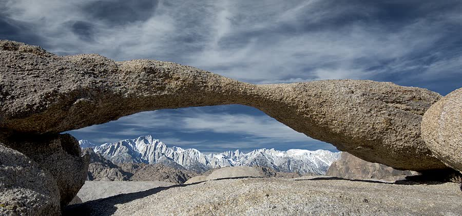
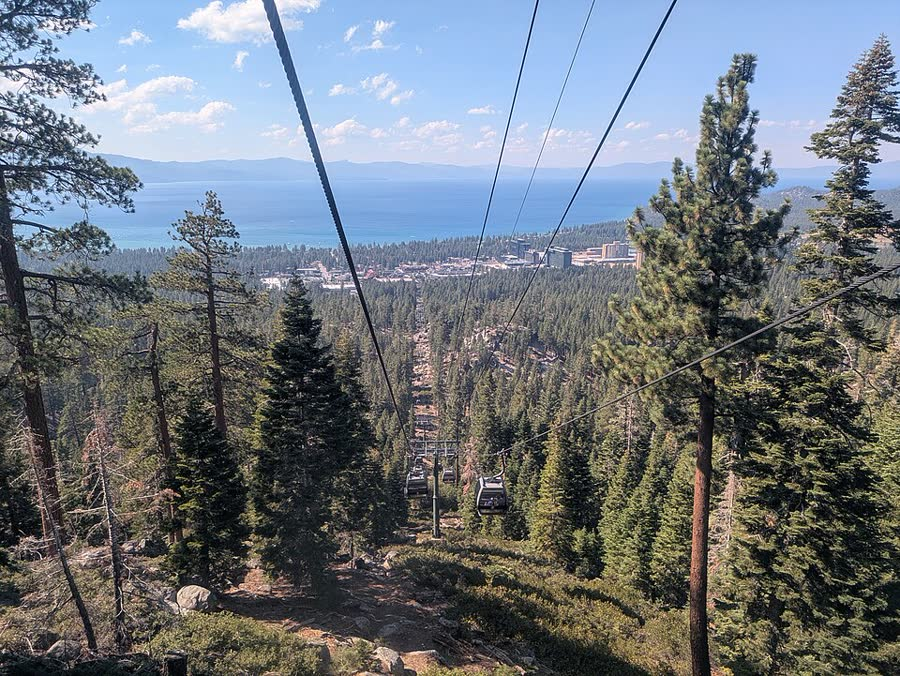
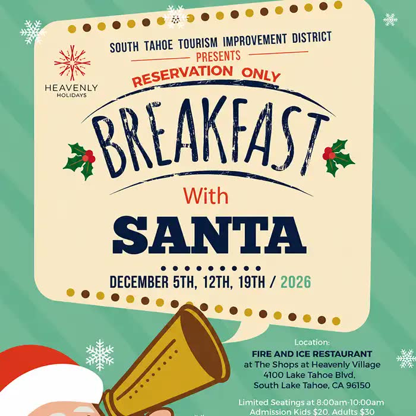
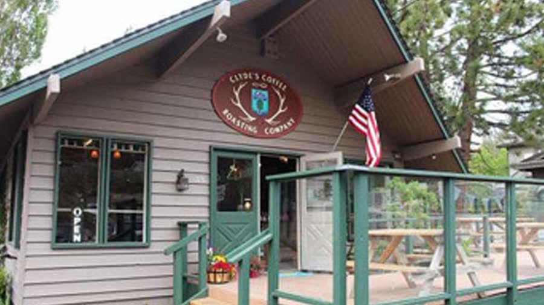
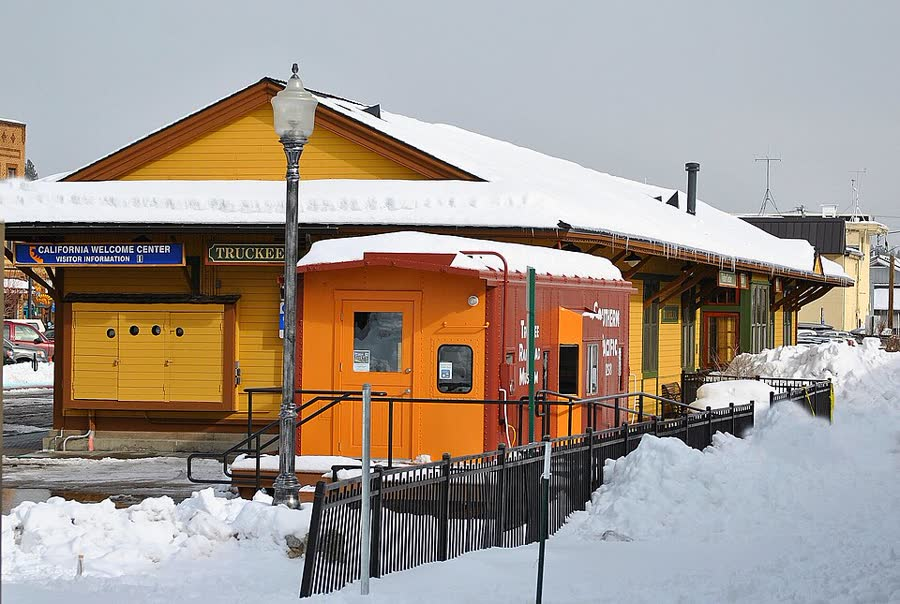
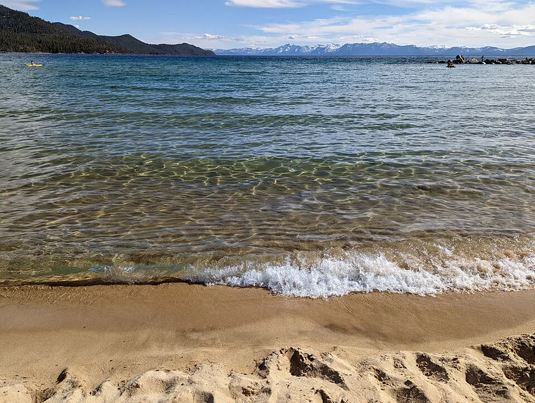
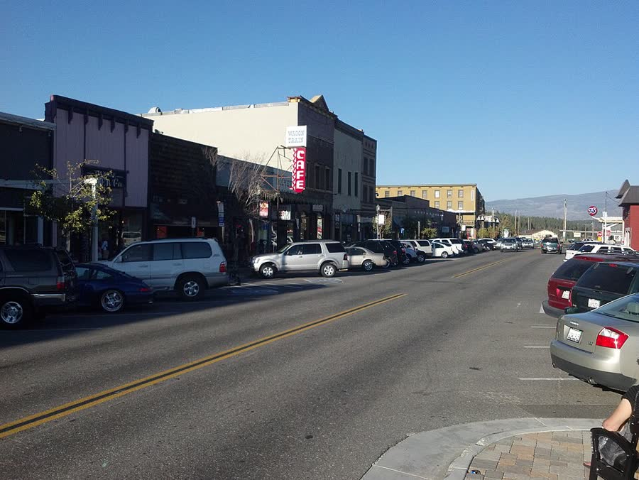
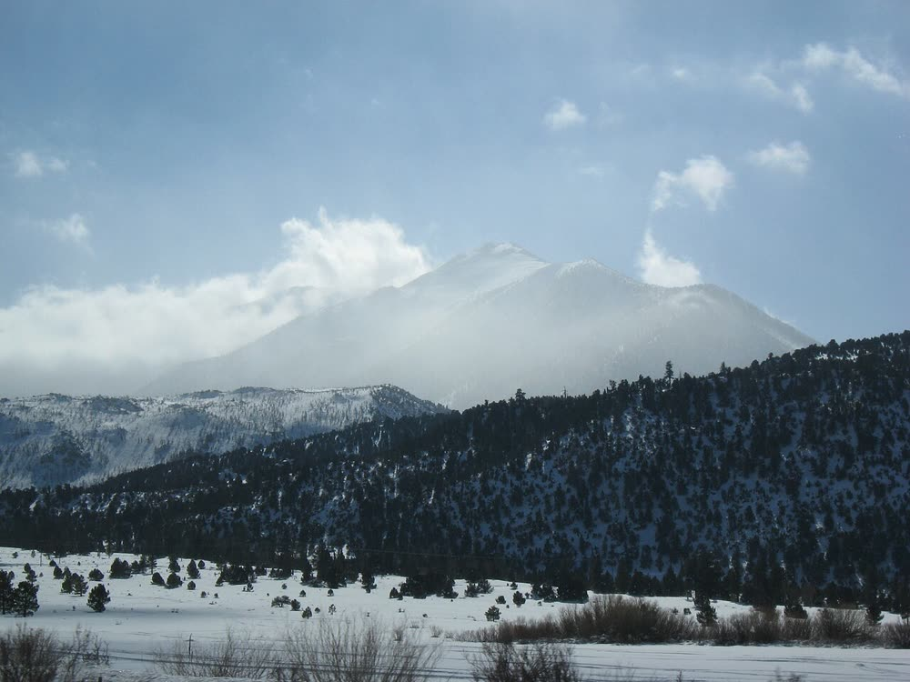

A Christmas getaway for two grown-ups and a two-year-old. Up US-395 from Lancaster with a stop every half hour, a night in Reno, then two nights by the lake with Santa, a tree lighting, and snow (probably).
Weather and snow · 10–13 December
Will there be snow?
Probably, at the lake. There is no forecast this far out, so this is what the same four days have looked like in past years, from NOAA’s daily weather-station records. The live forecast below switches itself on about a week before you leave.
82%
chance of snow on the ground at the lake while you are there
bare1–5 in.6–14 in.15 in. +no recordstrong El Niño year
Hover or long-press a square for that year’s depth.
The odds have slipped lately. Over the last 15 years it is 64%, not 82%: 2014, 2016, 2017, 2020 and 2025 were bare at lake level.
This winter is a strong El Niño. NOAA’s Climate Prediction Center expects a strong to very strong one through the winter. In the five strongest El Niño Decembers since 1982 (1982, 1991, 1997, 2015, 2023) Tahoe City had snow on the ground on these dates every time, though only 3 inches in two of them. Five years is a small sample, so treat this as a hint, not a forecast.
Snow on the ground is a safe bet up the mountain either way. Northstar and Heavenly make their own snow, and their villages sit at the base of the slopes.
On the drive: snow fell at Mammoth Lakes on 9 or 10 December in 24% of years, and at Bridgeport in 19%. That is the stretch where chain controls happen.
Live forecast
The National Weather Service forecasts about seven days ahead, so this fills in on its own from around 3 December. Until then: 8–14 day outlook (useful from about 26 Nov) · December outlook · NWS Reno (covers Tahoe).
Snow and temperature: NOAA NCEI GHCN-Daily records for Tahoe City (USC00048758), Reno airport (USW00023185), Bishop airport (USW00023157), Mammoth Lakes ranger station (USC00045280) and Bridgeport (USC00041072), 1991–2025, downloaded 30 Oct 2026. “Snow on the ground” means a measured depth of 1 inch or more on at least one of 11, 12 or 13 December; years with a missing reading are left out. Highs and lows average 6–16 December. El Niño: CPC ENSO discussion, 8 Oct 2026.
Two shores, one weekend, pick one
North Shore or South Shore?
Lake Tahoe has two Christmas villages, and they are an hour apart. Thursday is the same either way. Friday to Sunday changes with this switch, and so do the hotels, food and Christmas lists below.
For the soundtrack, press ♪ Play music in the bottom-right corner. Browsers will not let it start on its own.
South Shore our pick
Stay
Marriott Grand Residence Club, beside the gondola and the tree
Village
Heavenly Village: tree lit with Santa at 5:30 every night, free Santa photos
On your dates
Festival of Winter Lights (Fri & Sat), Breakfast with Santa (Sat)
Snow play
Gondola to the mini tubing hill; Adventure Mountain
From Reno
about 80 min, via Carson City and Spooner Summit
Home Sunday
about 8 hours, down Kingsbury Grade to 395
North Shore
Stay
The Ritz-Carlton, Lake Tahoe, mid-mountain at Northstar (Marriott)
Village
Northstar Village rink and fire pits; old-town Truckee
On your dates
Breakfast with Santa at Everline (Sat & Sun); Sand Harbor sleigh rides, if the season has started
Snow play
Tahoe Donner Snowplay
From Reno
about 50 min, all interstate to Truckee
Home Sunday
about 8½ hours, back through Reno
Why South: its Christmas happens on your dates. Heavenly’s tree lighting runs nightly, and the Festival of Winter Lights and Breakfast with Santa both fall on Friday and Saturday. Northstar’s tree lighting with Santa was 19 December last year, a week after you leave. The Ritz is the grander hotel, though, and the North Shore is the easier drive from Reno.
A long driving day, a Reno morning, one full day at the lake, and the drive home. Everything is built around a two-year-old’s nap and early bedtime.

Mobius Arch in the Alabama Hills, Lone Pine. Must stop number one.
Thursday 10 December
Up 395, Lancaster to Reno
Leave Lancaster at 6am. It is about 400 miles and roughly seven and a half hours of actual driving. With stops, that is a ten-to-eleven-hour day. The early start is about one thing: crossing Conway Summit (8,143 ft, the highest point on 395) by about 3:45pm, before the 4:36pm sunset.
The last hour runs through Carson City in the dark. The Polar Express leaves from there, but your dates were already sold out by late October; try the waitlist if you want it. Otherwise go straight to the hotel. A short evening at the Grand Sierra ice rink, with fire pits and s’mores, is the low-effort Christmas option.
Breakfast
In the car · coffee and a pastry at the Jawbone store at 7am
Schat’s Bakery, Bishop · buy the sheepherder bread for the weekend
Dinner
J.T. Basque, Gardnerville · family-style Basque, from 4pm, about 5:30
With a two-year-old: stop every 90 minutes to two hours, not every 30. Keep the puffy coat off under the car-seat harness; lay it over the top. Keep a cold-stop bag (hat, mittens, boots, wipes) in the cabin, not the trunk.

The Heavenly gondola leaves from the village, next door to the hotel.
Friday 11 December
Reno to the South Shore, then the Festival of Winter Lights
Coffee at Hub on the river, then The Discovery at 10am. Its Little Discoveries gallery is for ages five and under only. Leave around 12:30 so you cross Spooner Summit in daylight: back down 395 through Carson City, then US-50 over the summit. It takes about 80 minutes.
Check in at the Marriott Grand Residence Club, right beside the gondola. At 4pm drive ten minutes to the free Festival of Winter Lights, which runs only Friday and Saturday this weekend. There is Santa in the 1860 Toll House, the Christmas Fire Engine, a gingerbread village and a Trail of Lights. Be back for the village tree lighting at 5:30.
Lunch
In Reno before you leave · or Squeeze In for a late brunch
Dinner
Base Camp Pizza· in the village, where Santa photos run 5 to 9pm
With a two-year-old: the festival opens at 4, so go early for Santa and the fire engine before bedtime. It is dark by about 4:45, and a light-up toy helps on the Trail of Lights.

Breakfast with Santa, Saturday 12 December.
Saturday 12 December
Breakfast with Santa, the gondola, more lights
The 8am seating of Breakfast with Santa, two minutes’ walk from the room. It costs $20 a child and $30 an adult, and you need to book. Afterwards, ride the Heavenly gondola up for the lake view and the mini tubing hill. Under-fives ride free, and mini tubing runs 1 to 3pm.
Earlier in the day, drive 45 minutes to Sand Harbor for a Borges horse-drawn sleigh ride (Fri to Mon, 10am to 3pm, but call first, because last winter’s season started in January).
Railway fans can try the Nevada State Railroad Museum’s Santa Train in Carson City, which runs every 30 minutes from 10 to 3 on this exact weekend. It is 40 minutes away.
With a two-year-old: the gondola is enclosed and warm. Mini tubing is one rider per tube for children 42 inches and under, with a parent running alongside.

Clyde’s, at the start of the road home.
Sunday 13 December
Home, over Kingsbury Grade
An early breakfast at Ernie’s (opens at 6 or 7; listings differ), coffee at Clyde’s, then down Kingsbury Grade to US-395 at Minden and south all the way. It is about 376 miles and eight hours of driving, so leave by 8am to reach Lancaster around 6 to 7pm.
Do not follow a phone that sends you over Monitor Pass (89 south). It is closed in winter. Lunch is in Bishop again. Keep the stops short; this is the long day.
With a two-year-old: plan the long Bishop-to-Lone Pine stretch around nap time.

Downtown Truckee, the North Shore’s real Christmas town.
Friday 11 December
Reno to Truckee and Northstar
Coffee at Hub, then The Discovery at 10am. Then take I-80 west, an easy interstate, to downtown Truckee for lunch and a walk along the old railroad street. Trains still pass the depot. Truckee’s 2026 holiday dates aren’t posted yet. In past years there were “Festive Fridays” from 4 to 7pm, so look before you go.
It is 15 minutes up to the Ritz-Carlton at Northstar. Spend the evening in Northstar Village, where there is an outdoor rink with fire pits. Northstar held its official tree lighting and Santa on 19 December last year, after this trip, so expect lights and the rink but not Santa.
Rubicon Pizza, Northstar Village · or s’mores and dinner at the Ritz
Wine
Uncorked· a tasting bar on the Truckee main street
With a two-year-old: the Northstar fire pits are open flames at toddler height, so hold hands. The Ritz is mid-mountain, so ask at check-in how the shuttle or gondola down to the village works with a stroller.

Sand Harbor, where the sleigh rides run along the shore.
Saturday 12 December
Santa at breakfast, then a sleigh ride by the lake
Breakfast with Santa at Everline, at the base of Palisades Tahoe, from 7 to 10am. Look at the lobby gingerbread house while you are there. Then drive around the lake to Sand Harbor for a Borges horse-drawn sleigh ride: 55 minutes along the shore, with or without snow. Call first. Last winter’s season didn’t start until January, and 2026’s start isn’t posted. If it isn’t running, spend the time at Sand Harbor’s beach and boulders instead.
Fire Sign Cafe, Tahoe City · a 1978 breakfast-and-lunch cabin
Dinner
Wolfdale’s· open Saturday from 5:30pm, the special dinner
With a two-year-old: the sleigh is open, so bring the snowsuit and a blanket. A two-year-old pays the child fare.

Truckee, for breakfast on the way out.
Sunday 13 December
Home, by way of Reno
Breakfast at Squeeze In Truckee (7:30am) or coffee at Coffeebar (6am). Then take I-80 east to Reno and 395 south. It is about 416 miles and eight and a half hours of driving, almost an hour more than from the South Shore, so leave by 7:30.
The Mt Rose Highway is shorter on paper but climbs to 8,911 ft with hairpins. Only take it if the roads are clear.
With a two-year-old: a longer Sunday than the South Shore. Start before 8 so the Mono County passes are behind you by early afternoon.
Thursday · Jawbone Canyon to Reno
A stop every half hour, up 395
Twenty-one places to stop, in driving order. The green sign shows minutes of driving since the previous stop; red marks a must. It is December, so each card says what is actually open on a Thursday. Pick the ones that fall about every 90 minutes and drive past the rest.
Closed for winter, so not listed: the Mono Basin visitor center, the Whoa Nellie Deli in Lee Vining (its gas pumps stay open), the South Tufa road and the road to Bodie. The Manzanar and Red Rock visitor centers are closed on Thursdays, though their grounds are open. No food stop between Lee Vining and Topaz could be confirmed open in winter.

395 between Mammoth and Bishop in winter. The high country north of here is where chain controls happen.
The desert: Jawbone Canyon to Fossil Falls
1+55m
Jawbone Canyon Store (and BLM Jawbone Station visitor center)
The first real roadside stop on CA-14 north of Mojave: a general store run since 1963 that serves desert campers and off-road riders, known for barbecued tri-tip sandwiches, with a shaded outdoor area of handmade log tables. Half a mile away is Jawbone Station, a BLM interpretive center with desert, mining and wildlife displays and books. Treat it as the official 'start' of the scenic drive and the first diaper/stretch break.
Get Tri-tip sandwich if it is lunchtime; otherwise drinks and snacks for the car.
With a two-year-old: Shaded outdoor tables give a toddler room to move, but this is an off-road-vehicle area, so hold hands around the parking lot where trucks and trailers come and go.
Store: a Dec 2022 local article says it is open every day of the year except Christmas, so Thursday 10 Dec should be open; exact hours unverified. Jawbone Station visitor center hours unverified.
Striped red, white and pink sandstone cliffs right beside CA-14 - a classic movie-location landscape. The Red Cliffs Natural Preserve pull-off on the east side of the highway lets you see the best formation without paying or walking far; the Ricardo area on Abbott Drive has the visitor center, campground and short nature trail.
With a two-year-old: The Red Cliffs pull-off is a flat, short walk; trails are sandy and stroller-unfriendly, so use a carrier. Pit toilets in the campground.
Park is open sunrise to sunset daily, so open Thu 10 Dec. The visitor center is open only Fri 9-3 and Sat-Sun 9-5, so it will be closed on a Thursday.
A dry waterfall carved into black, polished lava by the ancient Owens River - a strange, otherworldly landscape a few minutes off 395. The walk from the parking area is about a quarter mile each way (0.5 mi round trip). On the way you pass Pearsonville, the self-styled 'Hubcap Capital of the World', where a fiberglass Uniroyal Gal ('Hubcap Lady') stands just north of the Shell station on Pearson Road, visible from 395 though fenced since 2021.
With a two-year-old: Use a carrier, not a stroller: the basalt is uneven and slippery, there is no shade, and the chasm edges need a firm hand on a two-year-old. Restrooms not confirmed.
Open land, free, no posted hours; Ridgecrest Guide recommends October-May as the best season. Daylight only. Access is a ~0.5-1 mile dirt road suitable for most cars – skip it after rain or snow.
The gateway visitor center for the Eastern Sierra, with a big-window view of Mt. Whitney (highest peak in the contiguous US), interpretive displays, a native plant garden and a Sierra Forever bookstore of regional books and maps. Rangers can give same-day road and weather conditions for the rest of 395.
With a two-year-old: Indoor, warm, flat, easy restroom-and-stretch stop; the plant garden is a safe place to toddle.
Open daily 8:30am-4:30pm (entrance gate closes 4:15pm), closed federal holidays. Thu 10 Dec is not a holiday, so it should be open.
Lone Pine's museum of the hundreds of Westerns (and later films) shot in the Alabama Hills, with a preserved stagecoach on the main floor, a wildly decorated cowboy car, stars' hats and guns, and props from films from Django Unchained to Tremors and Star Trek. A good 30-45 minute indoor stop and it explains what you're about to see in the hills.
Get Gift shop for a cowboy hat or sheriff's badge.
With a two-year-old: Indoor, flat and stroller-friendly; the stagecoach and the decorated car are the toddler draw, though many exhibits are look-don't-touch.
Official site header says 'Open Daily – 9:00am – 5:00pm' and advises calling to confirm; a 2023 local article said winter hours (Nov-Apr) were 10-5 (Sun 10-4). Either way, open on a Thursday late morning. Call (760) 876-9103.
Lone Pine's best-known breakfast-and-lunch diner, one block off Main Street, with house-baked breads and cookies; repeatedly recommended by Roadfood and Fodor's as the place to eat in town.
Get Breakfast or an early lunch; grab home-made cookies for the car.
With a two-year-old: Casual sit-down diner; high-chair availability not verified.
Breakfast and lunch only; exact current hours unverified. Call (760) 876-4675.
Rounded orange boulder hills below the snowy Sierra crest and Mt. Whitney, where hundreds of Westerns were filmed. Drive Whitney Portal Road 2.5 mi, turn right on Movie Road for 1.5 mi, bear right at the Y to the Mobius Arch parking; a short loop walk leads to a natural arch that frames Mt. Whitney.
With a two-year-old: Short loop, but it is rocky with steps – use a carrier rather than a stroller. Portable toilets reported across the road from the trailhead. No water and no cell signal in the hills.
Open public land with no gate or posted hours (BLM). Movie Road is graded dirt – fine for a car when dry; skip after rain or snow. Daylight only.
One of the ten camps where Japanese Americans were incarcerated during WWII, now a National Park Service site. Even with the visitor center closed you can drive the tour road, walk through the Block 14 barracks and mess hall exhibits, Merritt Park and the gardens, and see the cemetery against the Sierra - a sobering, important stop.
With a two-year-old: Grounds are flat dirt and gravel – a sturdy stroller works on the main paths; a quiet, reflective place, so a carrier helps keep a 2-year-old close. Restrooms are in the visitor center, which is closed Thursdays (pit toilets on the grounds not verified).
The visitor center is closed Tuesday to Thursday all year, so it is shut on 10 December. The grounds and driving tour are open sunrise to sunset, and the Block 14 barracks exhibits are open daily 9 to 4:15, so a Thursday stop still works.
Inyo County's free museum of Owens Valley history, two blocks off 395 in Independence. While the west wing is being rebuilt (Mar 2026 - spring 2027) the Indigenous Lifeways Gallery, bookstore and library stay open; outside are the Historic Equipment Yard of old wagons and machinery and a native plant garden, which are the real toddler draw.
With a two-year-old: The outdoor equipment yard is a good place to run around and look at big old machines; flat grounds.
Inyo County page: open Tue-Sun 10am-5pm, closed Mondays and county holidays – so open Thu 10 Dec. Partially under renovation through spring 2027.
A tiny barbecue stand in Big Pine that was Yelp's #1 restaurant in America in 2015 and was named California's best barbecue by LoveFood (reported July 2025). Tri-tip, pulled pork and ribs, with sides like spicy mac 'n' cheese and Hawaiian rolls; it often sells out.
Get Tri-tip (sells out first), pulled pork, mac 'n' cheese, Hawaiian rolls; take it to go and eat in the warm car or in Bishop.
With a two-year-old: Outdoor picnic tables only – no dining room – so in December plan on takeout; mac 'n' cheese and rolls are toddler-friendly.
Recent listings say 11am-8pm Thu-Mon, closed Tue-Wed; an older Sierra Wave piece gave fall/winter hours Wed-Sun 11-6. Both include Thursday, but current winter hours are unverified and it closes when the meat runs out – call ahead.
The Eastern Sierra's most famous road-trip stop: a bakery started in 1903 and known for Original Sheepherder Bread (hand-shaped, stone-hearth baked, recipe trademarked 1938), a big case of pastries and a busy sandwich bar. About 2.5 million visitors came through in 2021.
Get A loaf of Sheepherder bread (plain or a flavoured version) for the hotel, pastries and cookies for the car, a sandwich from the sandwich bar on fresh bread; coffee.
With a two-year-old: Crowded and busy at lunch (20-minute sandwich lines are reported) – one adult queues while the other walks the toddler; there is outdoor seating out front.
Reported open daily year-round; exact hours not published on schatsbakery.com – call (760) 873-7156. A Thursday in mid-December is not a holiday, so it should be open.
An 11-acre outdoor museum of nearly 50 historic buildings around the historic Laws Depot, with a locomotive turntable and restored narrow-gauge railroad cars. A big hit with train-obsessed toddlers and a short detour off 395 via US-6.
With a two-year-old: Lots of room to roam and real trains to look at; gravel and dirt paths, so a jogging stroller or carrier. Note: the 2026 'Railroad Express' Christmas event with Santa is on the second Saturday of December (12 Dec), not on the Thursday.
Winter hours (Sep-May) 10am-4pm daily, closed Thanksgiving and Christmas Day (Bishop Visitor Center guide; museum grounds map also shows 10-4). Open Thu 10 Dec.
A 3-mile hop up CA-203 from 395 into the ski town of Mammoth Lakes - likely the first real snow of the trip. The joint USFS/town welcome center sells books, maps and local art and has staff who know the day's road and weather conditions north. Black Velvet Coffee (3343 Main St) is a few blocks further up Main Street for espresso.
Get Coffee and a hot chocolate at Black Velvet Coffee (hours vary by source - check blackvelvetcoffee.com).
With a two-year-old: Warm, flat indoor stop for a diaper change; a chance to touch snow in the parking-lot banks. Mammoth at ~7,800 ft is cold in December – have hats and gloves out.
Welcome Center open daily 8am-5pm (USFS); Visit Mammoth's FAQ says closed only Thanksgiving, Christmas and New Year's Day – open Thu 10 Dec. Black Velvet Coffee: hours unverified.
In winter the Forest Service's Mono Basin visitor center is closed, so this nonprofit's shop in the middle of Lee Vining is the place to learn about Mono Lake's tufa towers, brine shrimp and the decades-long fight to save the lake. Good books, maps, toys and local gifts, and staff who know current conditions at the tufa sites.
Get Kids' books and Mono Lake souvenirs.
With a two-year-old: Small indoor shop – quick warm-up and restroom stop; Lee Vining's main street is right on 395, so hold hands on the sidewalk.
Mono Lake Committee posts have consistently given fall/winter hours of 9am-5pm daily, closing only Thanksgiving, Christmas, New Year's Day and a winter inventory day in late Jan/early Feb – so open Thu 10 Dec, but these are past-year posts; 2026 schedule unverified. The USFS Mono Basin Scenic Area Visitor Center north of town is closed for the winter (2024 USFS notice: full operations ended Sept 30).
A small county park right off 395 on the north shore of Mono Lake, with a lawn, a playground and restrooms, and the lake and its tufa towers in view. It is the easy winter leg-stretch at Mono Lake.
With a two-year-old: A playground and picnic tables for a two-year-old to run off the car seat. It is cold and windy in December, so bundle up.
The boardwalk out to the tufa is closed until further notice: it was damaged in the May 2025 Inn Fire and removed (California State Parks, checked 30 Oct 2026). The county park lawn, playground and lake view are still here, which makes it a fine leg-stretch, but you cannot walk out to the tufa.
A highway pullout more than 1,000 feet above Mono Lake with the whole basin, its islands and the volcanic Mono Craters spread out below and the Sierra crest behind - the classic last look back before 395 tops out at Conway Summit, 8,143 ft, the highest point on US-395. AARoads notes a small kiosk and Blue Star Memorial Highway marker at the overlook.
With a two-year-old: Stay in the car or hold the toddler: the pullout drops off steeply, and a pickup once slid off the edge here on fresh snow and ice (Sierra Wave, 2014). A 5-minute photo stop only.
Open highway pullout, no hours. In storms it may be snow-covered or icy and US-395 over Conway Summit can be under chain control – check Caltrans QuickMap before leaving Lee Vining. Cross it in daylight.
Bridgeport is a tiny Old West county seat in a wide meadow valley below the Sawtooth Ridge. Its white-and-green Italianate courthouse was built in 1880 and is on the National Register of Historic Places - a striking photo stop right on Main Street, with the snowy Sierra behind.
With a two-year-old: Short sidewalk stroll on Main Street; the courthouse lawn is a place to run for five minutes. Expect real cold in December – bundle up.
Courthouse exterior is viewable any time (it is a working government building; interior not a tourist site). Many Bridgeport businesses are seasonal; no Bridgeport cafe was verified as open in December – do not count on food here. Gas available in town (not separately verified for hours).
Just over the Nevada line, an old-school highway casino-lodge perched above Topaz Lake with views of the lake and the Sweetwater Mountains. Useful as a warm, reliable restroom-and-coffee stop after the long, empty stretch from Bridgeport through Walker canyon: it has the Lakeview Coffee Shop, a General Store & Coffee Bar, and the Star Broiler steakhouse.
Get Coffee or hot chocolate and a snack at the General Store & Coffee Bar or Lakeview Coffee Shop.
With a two-year-old: The casino floor is smoky and not a place for a toddler – use the coffee shop/general store side and step outside for the lake view.
Casino reported open 24/7; the lodge's site does not list dining hours. Coffee shop hours unverified – call (775) 266-3338.
A Carson Valley institution serving Basque family-style meals that trace back to the sheepherder boarding houses of the early 1900s, in a Victorian-era building originally built in Virginia City and moved here in 1896; run by the same family for over 60 years. The family-style dinner brings bread, soup, salad, a stew or side, beans and fries to share, plus your choice of entree.
Get Family-style Basque dinner (soup, salad, beans, stew, fries + entree) - plenty to share with the toddler.
With a two-year-old: Long shared tables and a lively room, so a noisy two-year-old fits in; lots of bland, shareable sides (bread, beans, fries). High chairs not verified.
Official site: Monday-Saturday, lunch 11:30am-4pm, dinner 4pm-close; closed Sunday. Open Thu 10 Dec – an early dinner around 4:30-5pm fits the drive timing.
Nevada's state collection of historic locomotives and coaches, many from the Virginia & Truckee Railroad, displayed in big engine-house buildings right on 395 at the south end of Carson City. A dream stop for a train-loving toddler.
With a two-year-old: Big indoor halls full of real engines – flat, stroller-friendly, and children 17 and under are free.
Open Thursday-Monday 9:00am-4:30pm, closed Tue/Wed and Thanksgiving, Christmas and New Year's Day – so open on Thu 10 Dec, but only if you arrive before about 3:45pm, which on the planned schedule is unlikely. Santa Train rides (not included in admission) run 5-6, 12-13 and 19-20 Dec 2026, every 30 min 10am-3pm – a possible day trip from Tahoe on 12-13 Dec.
The silver-domed Nevada State Capitol sits right on Carson Street (US-395 business route). Each December the state tree on the Capitol grounds is lit at the Silver & Snowflakes Festival of Lights (6 Dec in 2024) and the Capitol and downtown stay illuminated at night through the holiday season - a free, festive after-dark leg-stretch on the way to Reno.
With a two-year-old: Lawns and wide sidewalks for a quick run around to see the lights before the last 40-minute leg; stroller-friendly.
Grounds viewable any time. Holiday lights: the 2026 lighting date was not found; in past years (2014, 2017, 2024) the lighting was the first Friday of December and the lights stayed on nightly through the season, so they should be on by 10 Dec 2026 – unverified for 2026.
Carry chains that fit your tires, even in an AWD car. California requires it in chain controls, and Nevada’s passes require them unless you have AWD and snow tires. Practise fitting them once at home.
Download offline maps for the whole route. There is no cell signal in the Alabama Hills, or between Lee Vining and Topaz.
Pack a winter kit: water, food, a blanket each, a power bank and a flashlight. In January 2023, 395 north of Lee Vining was closed for six days.
On the day
Check Caltrans QuickMap the night before, and again in Bishop. You can also call 1-800-427-7623.
If Conway Summit is closed or chains are up and you’re late, sleep in Bishop or Mammoth instead and do the last 3 hours on Friday morning.
Gas
Fill up in Lone Pine and again in Bishop, the last big town before the high country.
Top up in Lee Vining or Bridgeport if you are under half a tank.
Nevada gas, from Topaz Lake on, is usually cheaper.
Thursday night · Friday morning
A night in Reno
After ten-plus hours on the road, keep it simple: an indoor pool, an early bedtime and a museum built for under-fives in the morning. If you are heading to the South Shore, Reno is 40 minutes past the turn-off at Carson City. You could sleep in Carson City instead and save the backtrack.
PICK. All-suite Marriott (104 suites, opened Oct 2018) at the Outlets at Legends in Sparks, right off I-80 on the east side of Reno. Every suite has a kitchen and separate sitting area, there is an indoor pool, and breakfast and parking are free.
Order Free hot breakfast buffet in the morning; kitchen lets you heat toddler food.
With a two-year-old: Suites give a separate sitting area so parents are not in the dark at 7 pm; indoor pool works in December; Scheels (giant store with indoor Ferris wheel) is a short walk across the Legends lot (verify Ferris wheel separately).
Open year-round hotel; no December-specific info found.
SpringHill Suitesindoor poolbest if heading southmap →
Marriott all-suite hotel in south Reno (South Meadows, by I-580/US-395). Indoor pool and hot tub, free full breakfast, free cribs. South Reno location is a head start for both the Mt Rose Highway and US-395 south to Carson City.
Order Free breakfast (one listing says 6:00-9:30 am).
With a two-year-old: Indoor pool and free cribs listed; suite layout gives a separate area for a sleeping toddler.
Newest Marriott in Reno (listed as opened September 2025), far south Reno near the start of the Mt Rose Highway (NV-431) and on US-395 toward Carson City. Free parking, free breakfast, free cribs.
Order Free breakfast (Expedia: continental).
With a two-year-old: Free cribs; brand-new rooms; but the pool is OUTDOOR so not much use in December.
Outdoor seasonal ice rink at the Grand Sierra Resort with fire pits, hot cocoa, cider and s'mores kits. Open every evening, so it is one of the few Christmassy things definitely running on a Thursday night.
Order Hot cocoa and s'mores kit by the fire pits.
With a two-year-old: A 2-year-old won't really skate; 'skate helpers' are available, but the realistic play is cocoa and s'mores by the fire pits watching skaters. It is outdoors at night in December – very cold.
2025 season opened Thu 20 Nov 2025; doors 16:00 daily, sessions 17:00-21:30 (late sessions to midnight Fri/Sat). 2026 season dates unverified – check grandsierraresort.com/icerink.
Grand Sierra Resort, 2500 E 2nd St, Reno, NV 89595
The V&T Railway Commission's one-hour night-time Polar Express round trip to 'the North Pole' from the Eastgate Depot in Carson City. The big Christmas-train experience of the region and it runs Thursday nights - but it is ~45-60 min south of Reno.
With a two-year-old: Children 2 and over need a ticket (under 24 months ride free on a lap); strollers must stay at the depot; arrive 45 min early. A late Thursday after a 7-hour drive is a lot for a 2-year-old – better fit if they overnight in Carson City instead.
Runs Thursday to Sunday nights at 5:00, 6:30 and 8:00pm. As of 30 October every coach for 10 to 13 December was sold out, with only single VIP parlor seats left. Call 775-686-9037 for the waitlist. Under 24 months rides free on a lap; at two, your child needs a ticket. No strollers on board.
Eastgate Depot, 4650 Eastgate Siding Rd, Carson City, NV
Downtown Reno hands-on science museum that began as a children's museum. Its 'Little Discoveries' gallery is reserved for ages 5 and under (soft textures, quiet caregiver area) and contains the Super Service Center pretend auto shop with kid-sized cars.
With a two-year-old: Ideal Friday-morning burn-off before the mountain drive: Little Discoveries is restricted to under-6s, so a 2-year-old is not trampled by big kids.
Regular hours Tue and Thu-Sun 10:00-17:00, Wed 10:00-20:00, Mon closed (except holidays/school breaks). So Fri 11 Dec 2026 10:00-17:00 expected; Thu 10 Dec closes 17:00 (too early for an evening arrival). December holiday exceptions not checked.
Giant sporting-goods store that doubles as a free indoor attraction: a 65-ft indoor Ferris wheel and two 16,000-gallon aquariums (freshwater and saltwater). Next door to the Residence Inn Reno Sparks pick - an easy warm, indoor Thursday-evening leg-stretch after the long drive.
With a two-year-old: Aquariums are the toddler draw; Ferris wheel requires 36 in. to ride with an adult (many 2-year-olds are just under – measure first). Indoors, stroller-friendly.
Listed hours Mon-Sat 9:00-21:00, Sun 10:00-18:00; wheel runs during store hours. Thu 10 Dec evening should be open – unverified for Dec 2026; Christmas events unverified.
1200 Scheels Dr, Sparks, NV 89434 (Outlets at Legends)
Not running that Thursday or Friday: the Candy Cane Express in Virginia City (weekends only), Dragon Lights (ends 29 Nov), the Sparks Christmas village (first weekend of December) and the Christmas on the Comstock events (weekends).
DINNER PICK. Reno's classic Basque boarding-house-style restaurant (since the 1960s): long communal tables, everything served family style. The Reno must-eat, and food arrives fast in courses - good for a tired toddler.
Order Every dinner includes soup, French bread, Basque beans, salad, fries, first course, dessert and a glass of house wine. Entrees (menu dated 8/15/25): sweetbreads $34, top sirloin $39, roast leg of lamb $43, lamb chops $54; 'No entree dinner' $28. Picon Punch $8 (the Basque cocktail).
With a two-year-old: Soup, bread, beans and fries arrive quickly and are toddler-friendly; a no-entree dinner can be shared. Communal tables can be noisy, which hides toddler noise. Kids' pricing and high chairs not confirmed – ask when reserving.
Open Tuesday to Saturday from 11am to close, so open Thursday. The website gives no closing time; booking sites say dinner ends about 9:30. Call 775-323-7203 to book a table and a high chair.
Nevada's oldest currently operating brewery (founded 1993), the original brewpub on Victorian Square in Sparks. Easy, casual backup dinner ~5 minutes from the Sparks/Legends hotels.
Order Ichthyosaur ('Icky') IPA; the brewery's 'Icky bread' made with spent barley.
With a two-year-old: Casual brewpub; a 2020 review mentions a kids' fried-fish plate; current kids menu unverified.
Listed hours: Mon-Thu 11:00-21:00, Fri-Sat 11:00-22:00, Sun 11:00-20:00. Unverified for Dec 2026.
Regional breakfast institution (omelette-heavy, born in Truckee) with several Reno-area cafes. If they skip the hotel breakfast, the South Reno (Foothill Rd) branch is right by the Mt Rose Highway junction and the Midtown one is near the Discovery.
Order Omelettes are the house specialty.
With a two-year-old: Family atmosphere; kids menu not confirmed.
Official: daily 7:30-14:00 (Midtown and Carson City open 7:00). Fri 11 Dec open.
Sparks: 4670 Sparks Blvd #110, Sparks NV 89436 (also Midtown 2020 Red Dr Ste 6; South Reno 25 Foothill Rd Ste 3; NW Reno 5020 Las Brisas Blvd)
Reno's best-known local roaster; the flagship cafe sits beside the Truckee River just west of downtown, ~1 mile from the Discovery museum. Other cafes: Hub-Red (2020 RED Dr, Midtown, 6am-8pm) and Meadowcreek (15425 Wedge Pkwy, south Reno - on the way to Mt Rose Hwy, daily 6am-4pm).
With a two-year-old: Riverside is mostly outdoor seating (reviewer note) – cold in December; Hub-Red or Meadowcreek are better indoor options with a toddler.
Official: Riverside daily 7:00-16:00. Fri 11 Dec open (holiday exceptions unverified).
Summit of the Mt Rose Highway at 8,911 ft - NDOT calls it the highest year-round pass in the Sierra Nevada. Snowy Tahoe Meadows sits just below on the lake side, and a scenic overlook on the western descent gives the first big view of Lake Tahoe, with Reno/Washoe Valley overlooks on the east side.
With a two-year-old: A 5-minute stop to touch snow and see the lake from the overlook; 8,900 ft is cold and windy – keep it short, layers and mittens on before opening the door. Only stop where there is a plowed pull-out.
Open year-round but frequently under chain control in December (NDOT requires chains unless 4WD/AWD with snow tires on this road). Check nvroads.com / 511 the morning of 11 Dec.
Old railroad/lumber town on I-80, 'Commercial Row' (National Register historic district, 2009) of boutiques, galleries and restaurants facing the tracks. The historic depot holds the Welcome Center and Museum of Truckee History; trains pass right through - a toddler hit.
Order Lunch on Commercial Row (Tahoe-side agent may have specific picks).
With a two-year-old: Freight and Amtrak trains pass the depot; sidewalks can be icy – carrier better than stroller after snow. Welcome Center has restrooms (verify).
Welcome Center listed daily 10:00-16:00; Museum of Truckee History Fri-Sun 10:00-16:00 (so open Fri 11 Dec). Downtown Christmas events in 2025 were mostly other dates (holiday market Thu 11 Dec 2025, Christmas Eve event 24 Dec) – 2026 calendar unverified.
Truckee Welcome Center, Historic Train Depot, 10065 Donner Pass Rd, Truckee, CA 96161
Each shore has a Marriott right in its Christmas village, plus a cozy alternative. Marriott’s site blocks automated price checks, so the rates for 11–13 December are yours to look up. Ask for a crib when you book, since no page we read promised one.
Marriott Bonvoy luxury resort mid-mountain at Northstar, ski-in/ski-out, with a mountainside heated pool and a big Living Room Lodge where the resort runs its December tree lighting, carolers and menorah lighting. Fireside Bliss experience includes roasting marshmallows and gourmet s'mores.
Order S'mores by the fire pit; dinner at Manzanita (on-site restaurant).
With a two-year-old: Ski-in/out mountain hotel reached by its own road; the Northstar Village rink and Santa scene are down the mountain (resort shuttle/gondola – confirm), so plan nap logistics; cribs not listed on official page – request at booking.
Official holidays page (2026 calendar, weekdays match 2026) lists 'December Events': Holiday Carolers, Lighting of the Christmas Tree (Living Room Lodge), Menorah lighting – no dates/times given; Christmas Eve/Day dinners 24-25 Dec. Gingerbread workshop is historic – not confirmed for 2026.
13031 Ritz-Carlton Highlands Court, Truckee, CA 96161
The budget Marriott option on the north side: an all-suite Bonvoy hotel with free breakfast and a hot tub, about 0.7 km from historic downtown Truckee and its holiday lights and shops.
With a two-year-old: Suites with a sofa/trundle give a toddler a separate sleep space and free breakfast avoids a morning restaurant; whether the pool is indoor or a seasonal outdoor pool is disputed between listings – assume no winter swimming unless the hotel confirms.
Open year-round; hot tub reported open in winter. Breakfast 6:30-9:00 AM per one listing.
Playful camp-themed boutique hotel on the lake road in Tahoe City with three fire pits and s'mores packs at the front desk - the whimsical, cheaper alternative to the Ritz on the north shore. Room types include a 'Great Indoors' room and a Queen & Twins Loft.
Order Grab a s'mores pack at the front desk for the fire pit.
With a two-year-old: Small, casual hotel with free parking at the door and fire pits that need a close eye on a two-year-old; no pool, and cribs are not mentioned – ask.
Operating with live booking; winter specifics unverified.
Marriott residence-club building right beside the Heavenly Gondola in Heavenly Village, sold on marriott.com to the public ('Book this hotel and join Marriott Bonvoy free at checkout'). 1-3 bedroom residences with full kitchens; no resort fees per Marriott.
With a two-year-old: A full kitchen and separate bedroom make nap time and early dinners easy, and the village ice rink and gondola are steps away; crib availability not stated – ask.
Open year-round; outdoor heated pool and two whirlpools described as year-round on timeshare listings.
1001 Heavenly Village Way, South Lake Tahoe, CA 96150
Marriott Vacation Club timeshare villa resort next to the Heavenly Gondola in Heavenly Village. Not clearly bookable by the public on marriott.com - nightly stays appear mainly via owner rentals (VRBO/RedWeek) and Expedia/Travelocity resale listings.
With a two-year-old: Studio to 2-3 bedroom villas with kitchens next to the gondola and rink; an owner rental means crib/rollaway is up to the resort – confirm.
About 27 historic log cabins in an aspen grove at about 7,000 ft in Hope Valley, with a wood-fired sauna and a General Store + Café (still called Sorensen's Café). It is the storybook snow-cabin option and lies right on the Hwy 88 route home toward US-395.
Order Breakfast or cocoa at Sorensen's Café.
With a two-year-old: Real snow right outside the door, and the hotel provides sleds and snowshoes, but it is remote with no village and Hwy 88/89 passes can be under chain control – only if the weather looks settled.
Open in winter as a cross-country ski base, with sleds and snowshoes provided (Record-Courier, March 2026). Specific December 2026 hours/events unverified.
Northstar's alpine-style pedestrian village is built around a 9,000 sq ft outdoor ice rink with fire pits, the gondola and shops - the North Shore's closest thing to a Christmas village. In 2025 the tree lighting with Santa photos and complimentary s'mores was Fri 19 Dec (4-7 PM), a week AFTER this trip's dates.
Order Hot chocolate by the fire pits; free s'mores when they run.
With a two-year-old: Flat pedestrian village with fire pits (supervise closely); the rink rents skates but a 2-year-old is realistically a watcher – the fire pits and gondola ride are the draw.
Rink open daily 12-9 PM weather permitting (visitplacer, undated). 2026 holiday schedule not posted as of 2026-10-30. 2025 pattern: tree lighting + Santa photos + free s'mores Fri 19 Dec 2025, 4-7 PM; earlier years ran s'mores Fri-Sun from early December. Expect village décor and the rink on 11-13 Dec; Santa that weekend is unverified.
A one-street Old West railroad town of brick storefronts beside the tracks, strung with lights in December - the North side's most genuine 'Christmas town' stroll. Downtown runs 'Festive Fridays' in early December: in 2024 that meant Fri 6/13/20 Dec, 4-7 PM, with Santa visits, carolers, a Snowflake Scavenger Hunt and Sip 'n' Shop.
Order Cocoa and a pastry while you window-shop; watch the trains at the depot.
With a two-year-old: Sidewalks along Commercial Row can be icy and the street is busy, so use a carrier or a stroller with big wheels; passing freight trains are a big hit with two-year-olds.
2026 schedule not posted as of 2026-10-30. 2024: Festive Fridays Dec 6/13/20, 4-7 PM (Truckee Chamber). 2025 equivalents found: Holiday Tree Lighting with Santa at The Old Lumberyard Mon 1 Dec 2025 4:30 PM; Holiday Block Party non-profit holiday market (Truckee Roundhouse / Tahoe Food Hub / Sierra Community House) Thu 11 Dec 2025; Christmas Caroling downtown Sat 20 Dec 2025. If the Friday pattern holds, Fri 11 Dec 2026 would be a Festive Friday – unverified.
Donner Pass Road (Commercial Row) at the Truckee Train Depot, 10065 Donner Pass Road, Truckee, CA 96161
Big resort at the base of Palisades Tahoe (formerly Resort at Squaw Creek) with an outdoor ice rink, a lobby gingerbread house, and Breakfast with Santa on the trip weekend. It is also a strong non-Marriott hotel alternative on the North side, with heated outdoor pools.
Order Breakfast with Santa at Cascades.
With a two-year-old: An indoor restaurant with Santa keeps a toddler warm, and the lobby gingerbread house is free to look at; the rink is a watch-from-the-side activity at two.
Breakfast with Santa Sat-Sun 12-13 Dec 2026, 7-10 AM at Cascades; gingerbread house on display 24 Nov 2026 – early Jan 2027; disco skating Saturday evenings 5-8 PM. (Skating with Santa and cookie decorating are other weekends.)
Borges family horse-drawn sleigh rides (since 1967), 55 minutes along the Sand Harbor shoreline. They run with or without snow - the classic Tahoe Christmas-card experience.
With a two-year-old: Kids 2-16 pay the child rate, so a two-year-old needs a ticket; bring a blanket and the snowsuit, as it is an open sleigh by the lake.
Fridays to Mondays and holidays, 10am to 3pm, weather permitting. No 2026-27 start date is posted, and last winter's rides began on 5 January, so call 775-588-2953 before planning a day around it. Prices: adults $60 ($75 Sat), children 2 to 16 $30 ($40 Sat), plus Sand Harbor park entry.
Sand Harbor Visitor Center, Lake Tahoe Nevada State Park, 2005 NV-28, Incline Village, NV 89452
The South Shore's Christmas village. A 65-foot cut tree is lit nightly at 5:30 PM with Santa, and there are free photos with Santa & Mrs. Claus every evening in December, plus an ice rink, the gondola and toy shops. On the trip weekend: Breakfast with Santa (Sat 12 Dec), Santa story time at Village Toys (13 Dec, 10 AM), a holiday market (13 Dec) and a free figure-skating exhibition (13 Dec, 3:30 PM).
Order Breakfast with Santa tickets ($20 kids / $30 adults, limited) - book ahead.
With a two-year-old: Everything is in one flat, walkable pedestrian village with restrooms in the shops, and the 5:30 PM tree lighting fits a toddler's bedtime; Santa photos at the Breezeway by Basecamp Pizza are free.
2026 schedule posted: nightly tree lighting 5:30 PM with Santa (from 27 Nov 2026); Santa photos 5-9 PM throughout December; Breakfast with Santa Sat 5/12/19 Dec 2026 (no start time listed); Story Time 13 Dec 10 AM; Holiday Market at South Lake Brewing Co. 6/13/20 Dec 12-5 PM; Figure Skating Exposition 13 Dec 3:30 PM; character meet-and-greets at the rink Saturdays in December 2-5 PM. NB the page mixes 2025/2026 weekday labels – reconfirm.
Heavenly Village Way at Lake Tahoe Blvd, South Lake Tahoe, CA 96150
South Lake Tahoe's free community Christmas fair, on exactly the trip's Friday and Saturday. It has an outdoor holiday market, a Trail of Lights, Santa in the 1860 Toll House plus Santa's House, photos with the Christmas Fire Engine, winter carriage rides, a Gingerbread House Village, Tahoe Art League kids' crafts, and a decorated 1930s cabin and museum.
Order Commemorative mug; food and drink stands.
With a two-year-old: Free and outdoors from 4 PM, so go at opening for Santa and the fire engine before a two-year-old's bedtime meltdown; it is dark by about 4:45, so a headlamp or light-up toy helps on the Trail of Lights.
Fri 11 & Sat 12 Dec 2026, 4-8 PM.
Lake Tahoe Historical Society Museum, 3058 Lake Tahoe Blvd, South Lake Tahoe, CA 96150
A sit-down breakfast in Heavenly Village with Santa and Mrs. Claus for photos and wishes. It runs Saturday 12 December 2026, the middle day of the trip.
Order Breakfast buffet (details not on page).
With a two-year-old: The 8:00 AM seating suits an early-waking two-year-old, and a restaurant setting means high chairs – confirm when booking.
Sat 5, 12 and 19 Dec 2026; seatings at 8:00 AM and 10:00 AM. Reservations required, seating limited.
Fire + Ice Restaurant, The Shops at Heavenly Village, 4100 Lake Tahoe Blvd (event text also says 1001 Heavenly Village Way), South Lake Tahoe, CA 96150
The week after, so don’t count on these: Northstar’s tree lighting with Santa (19 Dec last year), the M.S. Dixie II Cruise with Santa (19 Dec), Santa at Palisades village (21–24 Dec) and Santa at Camp Richardson (21 Dec last year). Cutting your own tree in the Tahoe Basin has been paused since 2024.
A groomed, gated sledding and tubing area with sleds and tubes provided - the gentlest organised snow play in Truckee. Truckee's visitor bureau calls its gentle hills 'an excellent spot for younger kids'.
With a two-year-old: Ages 3 and under were free in 2025/26. Children under 36 inches must sled with an adult and tubers must be at least 36 inches tall, so a two-year-old rides a sled on a parent's lap.
2026/27 opening and hours not posted. 2025/26 hours: Fri 12:15-4:30 PM, Sat-Sun 9 AM-4:30 PM; 2025/26 peak dates started 20 Dec, so 11-13 Dec would be non-peak. Opening depends on snow.
Tahoe Donner Downhill, Truckee, CA 96161 (Tahoe Donner Association)
An enclosed gondola rises from Heavenly Village over big Lake Tahoe views to Adventure Peak, where there is a tubing hill plus a separate mini-tubing hill for small children. It is the easiest real-mountain snow for a toddler.
With a two-year-old: Children four and under ride the gondola free. Mini tubing is for riders 42 inches and under, 1-3 PM, one person per tube – fine for a two-year-old with a parent beside the run.
Winter tubing runs 7 days a week, weather permitting; mini tubing 1-3 PM (Visit Lake Tahoe). The 2026/27 opening date and gondola hours were not verified.
4080 Lake Tahoe Blvd, South Lake Tahoe, CA 96150 (gondola base in Heavenly Village)
A dedicated snow-play and tubing park at Echo Summit. A per-car entry fee covers parking and the open snow-play areas, so you can just build a snowman and dig without buying tubing.
With a two-year-old: The open snow-play area on the car fee is the right speed for a two-year-old; tubing has a kids rate (44 inches and under), but there are no sleds allowed – tubes only.
Daily 9 AM-4 PM in season when there is snow; night tubing is Fri/Sat from January, so not in December. Opening in early December depends on snowfall – unverified.
21200 Hwy 50, Echo Summit, South Lake Tahoe, CA 96155
Granite boulders and clear water on the East Shore, and in winter far quieter than summer. The lots are plowed, there is a short accessible nature trail, the visitor centre is open year-round, and the Borges sleigh rides start here.
With a two-year-old: The one-third-mile Sand Point Nature Trail is wheelchair-accessible, so a stroller works when it is cleared; hold hands on the snowy boulders by the water.
Open 8 AM to 1 hr after sunset; parking lots kept clear of snow; Visitor Center open year-round; no reservation needed in winter (required only 15 May-30 Sep); boat ramp closed for season.
Tahoe City is the lake's only outlet: the Truckee River leaves through the Tahoe Dam under Fanny Bridge, where people lean over to spot big trout, beside a small lakeside museum and the walkable little town. Tahoe City puts up 'Downtown Winter Lights' for the holiday season.
With a two-year-old: A short, flat, free stop – looking for fish from the bridge rail is a classic toddler moment; keep a hand on them at the rail.
Gatekeeper's Museum is by appointment only 1 Nov-31 Mar (phone (530) 583-1762); summer Wed-Sun 11-4. Bridge, dam view and town are open. Downtown Winter Lights 2026 dates unverified (2025 mention from a realtor blog only).
West Lake Blvd at the Truckee River outlet, Tahoe City, CA 96145 (museum at 130 West Lake Blvd)
Tahoe's postcard view, looking down on the turquoise bay and Fannette Island (Lake Tahoe's only island). In winter it is a weather-dependent roadside look rather than a visit: Vikingsholm's tours and visitor centre are summer-only, and the 2-mile round-trip trail down is steep and icy.
With a two-year-old: View from the overlook lot and don't attempt the Vikingsholm hike with a toddler in winter (500-ft drop, snow and ice); the restrooms at the bottom are the only ones.
Park open sunrise-sunset; Vikingsholm tours ended 30 Sep 2026 (2026 season 23 May – 30 Sep). No services or water Oct-May. CA-89 around Emerald Bay closes repeatedly in winter storms for snow/avalanche/slides, sometimes for days (Caltrans D3 2023; CHP March 2025). Older guides say the Inspiration Point lot itself is closed/unplowed in winter with some plowed parking uphill – unverified for 2026. Check Caltrans QuickMap/1-800-427-ROAD before driving.
Emerald Bay Road (CA-89), about 9 mi NW of South Lake Tahoe, CA 96150
Truckee's well-known farm-to-table bistro in the historic Truckee Hotel, with seasonal New American food, craft cocktails, wine on tap and free live music. It is the North side's grown-up dinner within the Christmas-lit downtown.
Order Seasonal New American plates and a craft cocktail.
With a two-year-old: A reviewer praised its kids menu; go at 5 PM, before the music and the bar crowd – by later evening it's not a toddler room.
Open 11:30 AM to close, Monday-Sunday (official site).
10007 Bridge St (in the Truckee Hotel), Truckee, CA 96161
The North side's special-occasion dinner: a long-running Tahoe City restaurant with lake-view dining and a 'Cuisine Unique' menu that changes often, strong on fresh seafood.
Order Fresh seafood; ask about the wine list.
With a two-year-old: A quiet, grown-up dining room, so take the 5:30 PM opening table, bring quiet entertainment, and confirm a high chair when booking.
Dinner from 5:30 PM; closed Monday and Tuesday (so open Fri 11 and Sat 12 Dec); happy hour Sun-Fri 5-6:30 PM (Visit Placer).
A pizza, pasta and salad restaurant with booths for families, in the Northstar Village beside the rink - the easy toddler dinner if you are based at Northstar or the Ritz.
Order Pizza; kid-friendly menu available.
With a two-year-old: Booths and a kid-friendly menu, and it is steps from the rink and fire pits for a post-dinner wander.
Hours not verified – check Northstar's Hours of Operation page.
Village at Northstar, Northstar Drive, Truckee, CA 96161 (listings give 5001 or 6001 Northstar Dr)
A lakefront grill on the North Shore with windows over the water - the special-occasion lake-view lunch or dinner on the North side, and home of the Wet Woody.
Order Lunch with the lake view; a Wet Woody (the house rum drink) for the adults.
With a two-year-old: Book a lunch table, when it is lighter and the lake view entertains; there is a seasonal dining room – ask for a window and a high chair.
Official site says it is closed for now and returns in MID-DECEMBER; once open: lunch daily 11:30-5, dinner Sun-Thu 5-9:30, Fri-Sat 5-10. May not be open on 11-13 Dec – confirm before planning.
The original Squeeze In, serving big breakfasts in a tiny room on Truckee's main street since 1974. Guests sign the walls. It is the classic Truckee breakfast.
Order An omelette - the Racy Tracy was on Bobby Flay's Throwdown - or the Jack Johnson banana-walnut pancakes.
With a two-year-old: Toy baskets for kids, but seating is tight and there are weekend waits; join the online waitlist before you walk over.
A West Shore breakfast institution a couple of miles south of Tahoe City that makes almost everything from scratch. Breakfast and lunch are served all day.
Order Scratch breakfast with fresh-squeezed OJ; a latte from the Annex while you wait.
With a two-year-old: Expect a wait on busy mornings; the Annex coffee shop serves you while you queue, and an early arrival avoids the worst of it.
The South Shore's special-occasion dinner: lakeside fine dining at Edgewood Tahoe resort, with floor-to-ceiling windows on the lake and the Sierra sunset (formerly called Edgewood Restaurant). The resort's Bistro does breakfast, lunch and dinner more casually.
Order The sunset dinner; book a window table at about 4:30 PM in December.
With a two-year-old: An evening-only fine-dining room, so the Bistro is the better toddler choice. If you do go, book the earliest seating so sunset (about 4:45 PM in mid-December) comes before the meltdown.
Winter hours not verified; reservations recommended (Forbes Travel Guide).
A family-friendly pizza place at the base of the gondola, and by one guide's account the most popular restaurant in Heavenly Village. The free Santa photos happen in the breezeway right beside it.
Order Pizza.
With a two-year-old: The easiest toddler dinner in the village: pizza, noise is fine, and Santa photos are next door from 5 PM.
Mon-Thu 11:30 AM-9:30 PM, Fri-Sat 11:30 AM-10 PM.
1001 Heavenly Village Way #25a, South Lake Tahoe, CA 96150
The South Shore's classic breakfast diner, family-run since 1981 according to listings. It is on Hwy 89 just past the Y, so it is the Sunday-morning breakfast if you leave via Luther Pass (89/88).
Order Omelets or scrambles; locally roasted Alpen Sierra coffee; fresh-squeezed OJ.
With a two-year-old: A casual diner with booths and a long menu of easy toddler food; expect a weekend wait.
6 AM-2 PM daily (Visit Lake Tahoe).
1207 Emerald Bay Rd (Hwy 89), South Lake Tahoe, CA 96150
A family-friendly breakfast and lunch cafe inside Heavenly Village, a walk from the Grand Residence Club. It serves omelets, Benedicts, potato pancakes and waffles all day, plus a house blend developed with Clyde's Coffee Roasting.
Order Potato pancakes or waffles; the Clyde's house-blend coffee.
With a two-year-old: Calls itself family friendly and is steps from the rink and gondola, so it is the easy first meal of the day without moving the car.
Hours not listed on the Visit Lake Tahoe page – unverified.
1001 Heavenly Village Way, South Lake Tahoe, CA 96150
Truckee's own coffee company. It began in 2010 in an old tin garage on a backstreet of downtown Truckee and hand-roasts its coffee at its Reno roastery. The Bakery location on Donner Pass Rd adds breakfast, lunch and pastries.
Order Espresso drinks and a pastry from the bakery.
With a two-year-old: The Jibboom St original is one block from the downtown Christmas lights, and the Bakery has more room for a stroller; both are casual, but seating is tight at peak times.
Truckee Bakery: 6 AM-5 PM daily (official site). Jibboom St hours not verified.
Small-batch roaster just across the river from downtown Truckee that roasts on site. It serves direct-trade beans as pour-over, French press and cold brew, with local baked goods.
Order A pour-over and a bag of beans to take home.
With a two-year-old: Small cafe, so get coffee to go and walk the two minutes back across the river to downtown.
Hours not listed on any page I read – unverified.
10009 West River Street, Suite B, Truckee, CA 96161
The South Shore's local roaster, at the bottom of Kingsbury Grade (NV-207). That makes it the natural Sunday-morning coffee stop if you leave over Kingsbury to US-395.
Order House-roasted drip or espresso; beans to go.
With a two-year-old: A quick stop right on the road out, with parking at the shopping centre.
Open daily 6 AM-6 PM – winter hours not separately confirmed.
A cabin-style independent coffeehouse and cafe near the Y, with specialty lattes and homemade food. It sits on the way to Hwy 89 / Luther Pass, so it suits a Sunday breakfast-and-coffee stop on the Hwy 89/88 route home.
Order Specialty latte and a homemade breakfast item.
With a two-year-old: Casual and cosy with food a two-year-old will eat; parking out front.
A wine shop and wine bar in historic downtown Truckee, with limited-production wines from around the world, daily tastings and by-the-glass specials. Part of a small local group with sister bars in Tahoe City (475 N Lake Blvd) and Olympic Valley.
Order Whatever is on the daily tasting flight; a bottle to take back to the room.
With a two-year-old: A small wine bar – fine for a quick glass at 4 PM with a toddler in a carrier, not for a long sit.
A wine-focused tasting room in Tahoe City's Boatworks Mall by the lake. It hosts winemaker evenings and 'Blind Flight Fridays', listed through 25 Dec 2026.
Order The Friday blind flight (21+).
With a two-year-old: Adults' tasting room – one parent tastes while the other walks the toddler along the lakefront outside.
Mon-Thu 2-8 PM, Fri-Sat 12-10 PM, Sun 2-8 PM. Blind Flight Fridays listed 29 May – 25 Dec 2026, which includes Fri 11 Dec.
Boatworks Mall, 760 North Lake Blvd, Suite 1, Tahoe City, CA 96145
A lakefront wine bar in a converted lakefront office building, with a panoramic deck and lake views from the dining room. It won a Wine Spectator Award of Excellence in 2024 and serves shareable plates: fondue, charcuterie, pinsa, lobster roll.
Order A glass from the award list with the cheese fondue at sunset.
With a two-year-old: Shareable plates (fondue, flatbread, grilled brie) suit a toddler, so an early-evening visit works; kids' policy not stated – ask.
Open seven days from noon until closing (Wine Spectator, Sept 2024) – December 2026 hours not re-verified.
A small-lot California wine tasting bar at the Heavenly Gondola in the village, with flights plus cheese, charcuterie, oysters and caviar. It is the walk-in glass of wine between the 5:30 tree lighting and dinner.
Order A tasting flight with a cheese plate.
With a two-year-old: Steps from the rink and tree, so one parent can take a quick flight while the other does Santa photos.
12-10 PM, 7 days a week.
4101 Lake Tahoe Blvd (at the Heavenly Gondola), South Lake Tahoe, CA 96150
Lake hotel (Marriott Grand Residence Club or the Ritz-Carlton)
11–13 Dec
Holiday weekend; ask for a crib
Reno hotel (Residence Inn Reno Sparks)
10 Dec
Ask for a crib
Breakfast with Santa, Heavenly Village
Sat 12 Dec, 8 or 10am
Limited seats, reservations required
The Polar Express, Carson City
Thu 10 Dec, evening
Sold out for your dates on 30 Oct; waitlist on 775-686-9037
Sleigh ride, Sand Harbor
Fri–Sun, 10am–3pm
Call 775-588-2953: the season may not start until January
Louis’ Basque Corner or J.T. Basque
Thu 10 Dec
Call ahead for a table and a high chair
Snow chains that fit your tires
Before you leave
Required to be carried in chain controls
Packing for a two-year-old in the snow
A one-piece waterproof snowsuit; two pairs of mittens (the thumbless kind on a string stay on); boots half a size up for wool socks; a hat with ear flaps; kid sunglasses and sunscreen for the glare; a backpack carrier for icy sidewalks; a small pull-sled for village walks; and a change of clothes in the car. No puffy coat under the car-seat harness. Car-seat and layering advice: American Academy of Pediatrics.
Where this came from
Sources and credits
Every place on the page has the pages it was checked against on its card. Hours and holiday dates were checked on 30 October 2026; confirm them the week before you go. No Tripadvisor or Google scores are shown, because we only list numbers we actually saw.
Music:Up on the Housetop (“Up on the housetop reindeer pause, out jumps good old Santa Claus”), written by Benjamin Hanby in 1864 and played by the United States Air Force Band. It is a US government recording, so it is in the public domain. Via Wikimedia Commons.